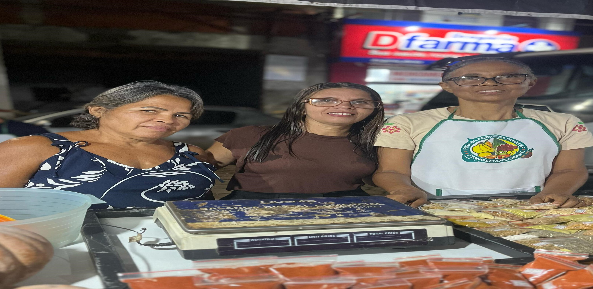
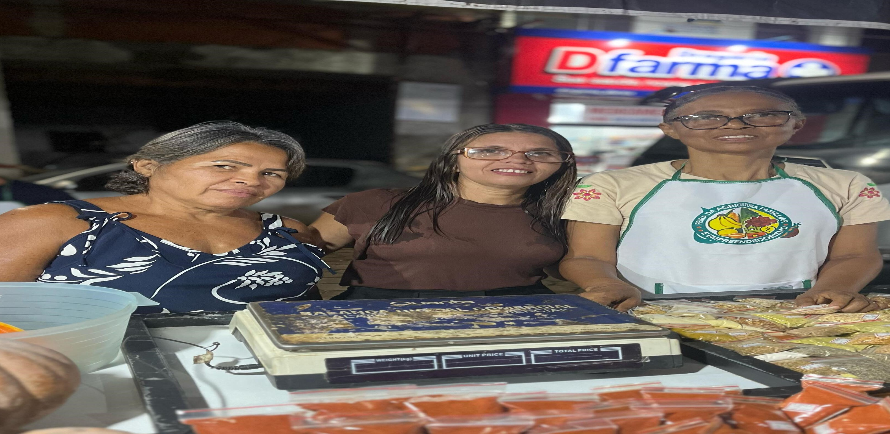

Secretaria de Agricultura e Pesca
Promovendo o desenvolvimento do campo com eventos e iniciativas!
Promovendo o desenvolvimento do campo com eventos e iniciativas!

 

Exposição de produtos agículas e artesanato da nossa cidade.
Espaço coletivo para cultivo de alimentos, promovendo sustentabilidade, inclusão social e segurança alimentar.